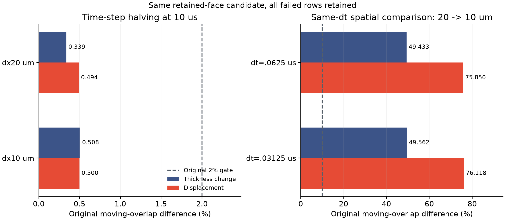

时间配对通过，
空间差异仍然很大。
同一保留短边候选、20／10微米网格、两个时间步，四组新轨迹均到10微秒。原生门槛和保存步独立审计通过；空间比较仍未达到原10%标准。
实际计算和独立核对
全局／区域液量与表活最大原生残差2.118e-15，力残差／目标最大0.197572，能量预算超额最大0.000e+00。全部采用原门槛，旧参考轨迹没有重跑，原默认求解器与二进制未修改。
时间稳定，不等于空间已足够细

| 比较 | 膜厚变化差异 | 位移差异 | 原标准 |
|---|---|---|---|
| 时间／20μm | 0.339% | 0.494% | 通过 |
| 时间／10μm | 0.508% | 0.500% | 通过 |
| 空间／dt=.0625μs | 49.433% | 75.850% | 失败 |
| 空间／dt=.03125μs | 49.562% | 76.118% | 失败 |
20微米时间配对最大约0.494%，10微米约0.508%，均小于2%。在较小时间步下，20→10微米的膜厚变化差异约49.562%、位移差异约76.118%，超过10%。这是离散分辨率之间的差异，不是相对实验真值的误差。
同一时刻的真实粒子

下一步检验5微米，仍按原标准
当前参考配对为同一候选实现提供了可复核基础。下一步是候选5微米的两个时间步，先检验其时间稳定性，再与候选10微米作匹配时间步的空间比较；不会拼接旧实现与新实现的结果。较粗网格空间失败保留，不能靠几何恒等式或更改单个阈值替代验收。
10微秒仍只是首检查点。50／200微秒、连续物理通量／牵引力、交换系数、薄膜元厚度比、整体条纹和保留工况实验未完成。任何后续超过2小时的计算，须在启动前设置并核验半小时监视。
此前候选单步控制 · 原实现已有空间失败 · 原5微米第78步失败。
完整数据、审计、源码与复现
精确摘要 · 全部比较行 · 验收范围 · 原生执行前协议 · 原始比较协议 · 比较输入与审计封存 · 36＋36审计范围。
177份原始输出、关闭日志、审计及源码共23.557MB，已从8卷ZIP实际恢复并逐文件校验。每卷小于5MB，较大原始文件保留在本地并通过分块恢复。字节清单 · 恢复核验 · 恢复脚本。
恢复：python restore_raw.py REPORT_DIRECTORY NEW_OUTPUT_DIRECTORY，拒绝覆盖现有目录。ZIP内包括原始源码与审计字节，处理后文本可能经Git换行规范化。独立审计改变了处理顺序，先审计个别终态，未读取当时仍在运行的帧；公式和门槛不变。独立审计协议。